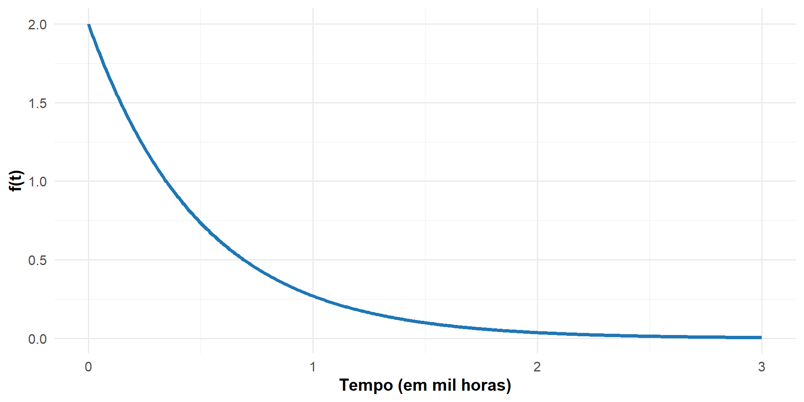
ANÁLISE DE SOBREVIVÊNCIA E CONFIABILIDADE
FUNÇÕES BÁSICAS
Prof. Guilherme Veloso (guilhermev@id.uff.br)
Universidade Federal Fluminense
INTRODUÇÃO
INTRODUÇÃO
- Para descrever adequadamente o tempo de ocorrência até a ocorrência de um evento de interesse, a Análise de Sobrevivência e Confiabilidade utilizam um conjunto de funções fundamentais.
- Essas funções permitem:
- Descrever o comportamento do tempo até a ocorrência do evento;
- Quantificar riscos e probabilidades ao longo do tempo;
- Responder perguntas práticas em contextos médicos e de engenharia.
- Todas essas funções são derivadas da distribuição do tempo até o evento e estão matematicamente interligadas.
- A partir delas, será possível realizar descrição, comparação entre grupos e inferência estatística.
MOTIVAÇÃO I: DADOS DE AIDS
- Um estudo clínico teve 50 pacientes acompanhados por quatro anos para estudar a sobrevivência após o diagnóstico de AIDS.
- No caso da AIDS, a probabilidade de morte é uma função que depende do tempo desde o diagnóstico.
- Em Análise de Sobrevivência, é necessário acomodar também os problemas nos quais a ocorrência do evento de interesse não é constante ao longo do tempo.
MOTIVAÇÃO II: DADOS DE DISPOSITIVOS
- Considere que 35 dispositivos foram colocados sob teste durante 2.000 horas.
- Assim como no exemplo anterior, a falha não é constante ao longo do tempo.
- Em Confiabilidade, é necessário acomodar também os problemas nos quais a ocorrência do evento de interesse não é constante ao longo do tempo.
PERGUNTAS DE INTERESSE
- Suponha o interesse de responder às seguintes perguntas:
- Qual a probabilidade de um paciente diagnosticado com AIDS falecer em até três anos após o diagnóstico?
- Qual a probabilidade de um paciente sobreviver por mais de dois anos após o diagnóstico?
- Qual o número esperado de óbitos em um estudo clínico de pacientes acompanhados por cinco anos?
- Qual o tempo mediano de sobrevivência dos pacientes com AIDS?
- Qual a probabilidade de um dispositivo falhar após 1000 horas?
- Se a garantia é de 500 horas, qual a probabilidade de falha nesse período?
- Qual o número esperado de falhas em um estudo acompanhado por 4000 horas?
- Qual o tempo mediano de falha?
FUNÇÕES BÁSICAS
- Para responder a todas as questões anteriores, vamos utilizar as funções básicas da Análise de Sobrevivência e Confiabilidade.
- As funções vistas nesta aula serão:
- Função Densidade de Probabilidade
- Função de Sobrevivência (Confiabilidade)
- Percentis
- Função de risco
- Função de risco acumulado
- Tempo médio
- Tempo médio residual
- Essas funções possuem a mesma estrutura matemática em Análise de Sobrevivência e Confiabilidade.
- Todas essas funções devem ser atribuídas a uma variável aleatória.
NOTAÇÃO PARA O TEMPO
- Considere a variável aleatória não negativa e contínua \(T\), que representa o
tempo até a ocorrência do evento de interesse.- Já sabemos que o evento de interesse pode ser, por exemplo, morte, recidiva, remissão, falha, entre outros.
- A letra \(t\) representa um valor específico (fixo) dessa variável.
- O objeto central da Análise de Sobrevivência e Confiabilidade é a distribuição do tempo até a ocorrência do evento de interesse.
- A partir dessa distribuição, são definidas as funções básicas de Análise de Sobrevivência e Confiabilidade.
- Os dados observados nos estudos fornecem a base para descrever essa distribuição e realizar inferência estatística sobre o processo ao longo do tempo.
FUNÇÃO DENSIDADE DE PROBABILIDADE
HISTOGRAMAS COM FREQUÊNCIA ABSOLUTA
- Considere o seguinte histograma:
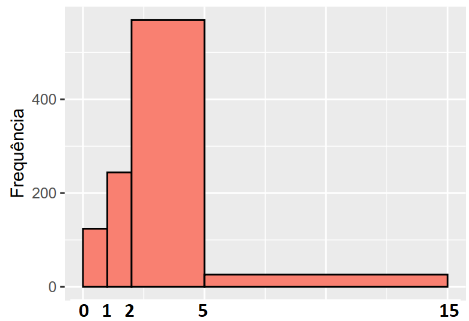
- Neste histograma com intervalos desiguais, a frequência absoluta não ajuda na comparação das classes.
- Na classe (2,5], a frequência observada é maior, mas essa classe possui amplitude diferente das demais.
- É preciso uma medida que pondere pela amplitude da classe, nesses casos.
RELEMBRANDO A DENSIDADE
- Assim, para cada intervalo, define-se a densidade como:
\[ \text{Densidade} = \frac{\text{Frequência Relativa}}{\text{Amplitude}} \]
A frequência relativa é uma probabilidade.
Tem-se, agora, os seguintes valores:
| Intervalo | Frequência Relativa | Amplitude | Densidade |
|---|---|---|---|
| [0,1) | 0,12 | 1 | 0,12 |
| [1,2) | 0,26 | 1 | 0,26 |
| [2,5) | 0,591 | 3 | 0,197 |
| [5,15] | 0,027 | 10 | 0,003 |
HISTOGRAMA COM DENSIDADE
- Assim, é possível medir a densidade de valores de cada intervalo.
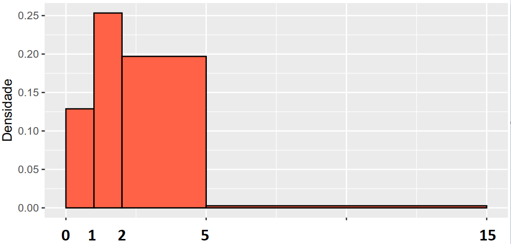
- Apesar do intervalo (2,5] possuir a maior frequência relativa, o intervalo (1,2] é mais denso.
INTRODUÇÃO DA FUNÇÃO \(f(t)\)
- Voltando ao contexto de Análise de Sobrevivência e Confiabilidade:
- \(T\) é a variável aleatória que representa o
tempo até a ocorrência do evento de interesse. - \(t\) representa um valor observado (fixo) da variável \(T\).
- \(T\) é a variável aleatória que representa o
- Considere o intervalo \([t,t+\Delta)\), , em que \(\Delta\) é um incremento:
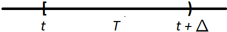
- A densidade da variável aleatória \(T\) nesse intervalo é:
\[ \text{Densidade} = \frac{\text{Frequência Relativa}}{\text{Amplitude}} = \frac{P(t \leq T < t+\Delta)}{\Delta} \]
DEFINIÇÃO DA FUNÇÃO \(f(t)\)
- Agora considere esse incremento \(\Delta\) cada vez mais se aproximando de 0.
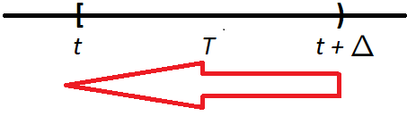
- Essa é a definição da função densidade de probabilidade da variável contínua \(T\), representada por \(f(t)\):
\[ f(t) = \lim_{\Delta \to 0} \frac{P(t \leq T < t+\Delta)}{\Delta} \] - Essa é a definição de qualquer função densidade de probabilidade associada a uma variável contínua.
INTERPRETAÇÃO DA FUNÇÃO \(f(t)\)
- A função \(f(t)\) dá a densidade de probabilidade da variável aleatória \(T\) no ponto \(t\).
- É o limite da probabilidade do intervalo \([t,t+\Delta)\) dividido pelo incremento à medida que ele vai para 0.
- No contexto de Análise de Sobrevivência e Confiabilidade, \(f(t)\) é interpretada como a densidade de probabilidade de um elemento apresentar o evento de interesse em um intervalo instantâneo de tempo.
- Essa função permite que a ocorrência do evento de interesse ao longo do tempo seja variável, já que depende de \(t\).
EXEMPLO: DADOS DE DISPOSITIVOS
- Considere, por estudos anteriores, que o tempo de falha \(T\) (em mil horas) dos dispositivos tem a seguinte função densidade de probabilidade:
\[ f(t) = 2 e^{-2 t}, \quad t>0 \]
- O gráfico da densidade mostra que as falhas tendem a ocorrer mais cedo.
- À medida que o tempo passa, as falhas se tornam progressivamente menos prováveis.
- Tome cuidado ao interpretar essa função, já que ela não expressa a probabilidade de maneira imediata e sim a partir da integral \(P(a<T<b) = \int_a^bf(t)dt\).
FUNÇÃO DE SOBREVIVÊNCIA (CONFIABILILDADE)
INTRODUÇÃO
- É a principal função utilizada em Análise de Sobrevivência e Confiabilidade.
- Ela ajuda a responder questões do tipo:
- A partir do seu diagnóstico, qual a probabilidade de um paciente com AIDS morrer após 365 dias?
- Qual a probabilidade de um determinado dispositivo falhar após 4000 horas de operação?
DEFINIÇÃO DA FUNÇÃO \(S(T)\)
- A função de sobrevivência (confiabilidade) \(S(t)\) da variável aleatória \(T\) avaliada no tempo observado \(t\) representa a probabilidade do tempo de ocorrência do evento de interesse ser maior que \(t\), isto é,
\[ S(t)=P(T > t) \]
- Assim:
- A probabilidade de um paciente com AIDS morrer após 365 dias é \(S(365)=P(T>365)\).
- A probabilidade de um dispositivo falhar após 4000 horas é \(S(4000)=P(T>4000)\).
- Em Confiabilidade, a função de confiabilidade é, comumente, denotada por \(R(t)\). Para facilitar a notação, usaremos \(S(t)\) nos dois contextos.
RELAÇÃO COM A FUNÇÃO \(F(t)\)
- Relembrando que a função de distribuição acumulada \(F(t)\) avaliada para a variável aleatória contínua \(T\), no tempo \(t\) é:
\[ F(t)=P(T\leq t) \]
- Fica claro que a função de sobrevivência (confiabilidade) \(S(t)\) pode ser reescrita como:
\[ S(t)=P(T>t)=1-P(T\leq t)=1-F(t) \]
EXEMPLO DE UMA FUNÇÃO \(S(t)\)
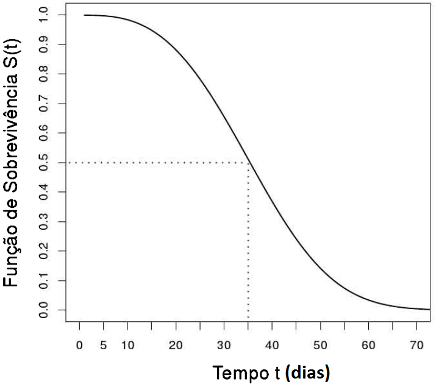
- O tempo de ocorrência mediano do evento foi de 35 dias, pois este é o tempo no qual 50% dos elementos não sofreram o evento \((S(35) = 0,5)\)CARACTERÍSTICAS DA FUNÇÃO \(S(t)\)
- A função \(S(t)\) começa sempre com \(S(0) = 1\), ou seja, a probabilidade de um elemento apresentar o evento após 0 unidades de tempo é 1.
- À medida que o tempo passa, \(S(t)\) decresce ou permanece constante e, no limite, quando \(t \rightarrow \infty\), \(S(\infty) = 0\).
- Eventualmente, todos os indivíduos experimentarão o evento de interesse se o tempo for suficientemente longo.
- Existe a possibilidade de quando \(t \rightarrow \infty\), \(S(\infty) = p\neq0\)
- Comum em estudos de fração de cura, onde uma proporção \(p\) de elementos jamais apresentarão o evento de interesse (não será abordado aqui).
EXEMPLO: AVALIANDO 2 TRATAMENTOS
- Considere o objetivo de avaliar o tempo até a morte de pacientes acometidos por certa enfermidade, desde a aleatorização de dois tipos de tratamento.
- O grupo 1 foi tratado com a droga A e
- O grupo 2 foi tratado com a droga B.
EXEMPLO: AVALIANDO 2 TRATAMENTOS
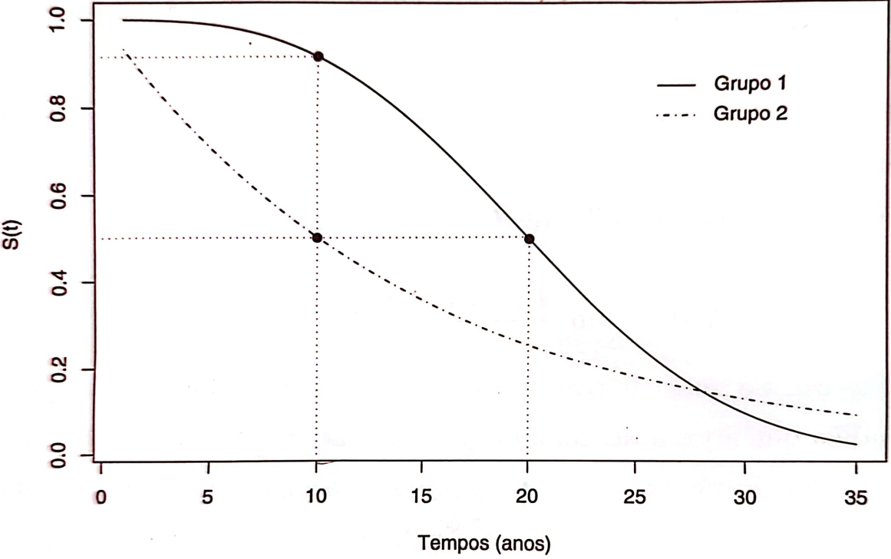
EXEMPLO: AVALIANDO 2 TRATAMENTOS
- O tempo de vida dos pacientes do grupo 1 é superior ao dos pacientes do grupo 2 na maior parte do acompanhamento.
- Para o grupo 1, o tempo mediano é 20 anos, enquanto para o grupo 2 é 10 anos.
- Cerca de 90% do grupo 1 ainda está vivo após 10 anos, enquanto 50% do grupo 2 permanece.
EXEMPLO: DADOS DE DISPOSITIVOS
- Nesse exemplo, consideramos que, por estudos anteriores, que o tempo de falha \(T\) (em mil horas) dos dispositivos tem a seguinte função densidade de probabilidade:
\[ f(t) = 2 e^{-2 t}, \quad t>0 \] a) Encontre a função de sobrevivência \(S(t)\)
Encontre a função de distribuição acumulada \(F(t)\)
Prove que \(S(t)=1-F(t)\)
EXEMPLO: DADOS DE DISPOSITIVOS (RESPOSTA)
- A função de confiabilidade \(S(t)\) é obtida da seguinte forma:
\[ S(t)=P(T>t)=\int_{t}^\infty f(x)dx=\int_{t}^\infty 2 e^{-2 x}dx=e^{-2 t} \]
- A função de distribuição acumulada é obtida da seguinte forma:
\[ F(t)=P(T<t)=\int_0^t f(x) dx = 1 - e^{-2 t} \]
- Logo, conclui-se que : \(S(t)=1-F(t)=1-(1 - e^{-2 t})=e^{-2 t}\)
EXEMPLO: DADOS DE DISPOSITIVOS (GRÁFICO DE \(S(t)\)
- O gráfico da função de confiabilidade \(S(t)=e^{-2 t}\) é dado por:
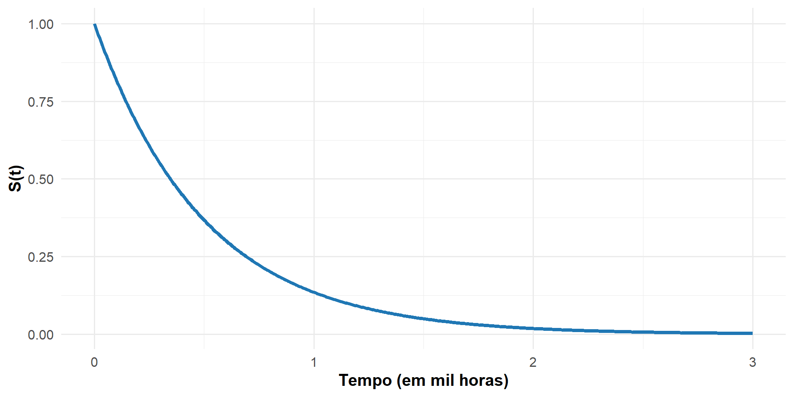
- Observe que \(S(0)=1\) e \(S(t\rightarrow \infty)=0\).
- A probabilidade de permanecer sem o evento por muito tempo torna-se cada vez menor, tendendo a zero.
- A probabilidade de um dispositivo durar mais que 1000 horas é \(S(1)=e^{-2\times 1}=0.1353\).
- A probabilidade de um dispositivo durar mais que 4000 horas é \(S(4)=e^{-2 \times 4}=0.0003\).
PERCENTIS
INTRODUÇÃO
- Considere o objetivo de responder às seguintes perguntas:
- Qual é o tempo tal que 70% dos pacientes diagnosticados com HIV já morreram, a partir do diagnóstico?
- Qual é o tempo de operação tal que 80% dos dispositivos já falharam?
- Para responder a estas e outras perguntas similares, usamos os percentis dos tempo de ocorrência do evento de interesse.
DEFINIÇÃO DO PERCENTIL \(t_p\)
- O percentil \(t_p\) é definido como o tempo \(t\) tal que:
\[ P(T \leq t_p) = F(t_p)= p \]
- Equivalentemente, em termos da função de sobrevivência:
\[ S(T_p) = 1 - p \]
INTERPRETAÇÃO DO PERCENTIL \(t_p\)
- Em palavras, \(t_p\) corresponde ao tempo para o qual \(p \times 100\%\) dos indivíduos já apresentaram o evento de interesse.
- Isso significa que, no tempo \(t_p\):
- uma proporção \(p\) dos indivíduos já teve o evento;
- uma proporção \(1-p\) ainda não apresentou o evento.
- Em particular:
- \(t_{0.50}\) é o tempo mediano de ocorrência do evento;
- \(t_{0.25}\) e \(t_{0.75}\) são os outros quartis do tempo até o evento.
EXEMPLO: DADOS DE DISPOSITIVOS
- Nesse exemplo, consideramos que, por estudos anteriores, que o tempo de falha \(T\) (em mil horas) dos dispositivos tem a seguinte função densidade de probabilidade:
\[ f(t) = 2 e^{-2 t}, \quad t>0 \]
Além disso, já sabemos também que o tempo \(T\) tem a seguinte função de confiabilidade:
\[ S(t)=e^{-2 t} \]
Derive a fórmula do percentil \(t_p\). A partir dela, encontre o tempo mediano de falha dos dispositivos.
EXEMPLO: DADOS DE DISPOSITIVOS (SOLUÇÃO)
- A partir da função \(F(t)=1-e^{-2t}\), tem-se que:
\[ \begin{aligned} P(T \leq t_p) &= F(t_p) = p \\ &\Rightarrow 1 - e^{-2t_p} = p \\ &\Rightarrow e^{-2t_p} = 1 - p \\ &\Rightarrow -2t_p = \ln(1 - p) \\ &\Rightarrow t_p = -\frac{\ln(1 - p)}{2} \end{aligned} \] - Assim, o tempo mediano de falha é \(t_{0.5}=\frac{\ln(1 - 0.5)}{2}=0,346\) mil horas ou 346 horas.
FUNÇÃO DE RISCO
INTRODUÇÃO
- A função de risco \(\lambda(t)\) ajuda a responder questões do tipo:
- Qual é o risco instantâneo de um paciente com AIDS vir a óbito após sobreviver a 365 dias?
- Qual é o risco instantâneo de um emissor de laser apresentar falha após não ter falhado em 2000 horas?
DEFINIÇÃO DA FUNÇÃO \(\lambda(t)\)
- A função de risco \(\lambda(t)\) é definida como o risco instantâneo de um elemento apresentar o evento de interesse entre os tempos \(t\) e \(t+\Delta\), dado que o evento não ocorreu até \(t\).
- Como \(\Delta\) pode ser infinitamente pequeno, a função de risco expressa o risco instantâneo de ocorrência do evento, dado que até então ele não ocorreu.
\[ \lambda(t)= \lim_{\Delta \to 0} \frac{P(t \le T < t+\Delta \mid T>t)}{\Delta} \]
- A função \(\lambda(t)\) pode ser vista como uma adaptação da densidade \(f(t)\), incorporando a informação de sobrevivência até \(t\).
NOMENCLATURAS DA FUNÇÃO \(\lambda(t)\)
- A função de risco \(\lambda(t)\) também é chamada de:
- taxa de incidência,
- força de infecção,
- taxa de falha,
- força de mortalidade,
- força de mortalidade condicional.
- Apesar do nome, \(\lambda(t)\) é uma taxa, não uma probabilidade.
- Ela pode assumir qualquer valor real positivo.
INTERPRETAÇÃO DA FUNÇÃO \(\lambda(t)\)
- A função de risco permite analisar o risco de ocorrência do evento de interesse em um tempo \(t\), dado que o indivíduo não apresentou o evento de interesse até esse momento.
- Por exemplo:
- O risco instantâneo de um paciente falecer logo após uma cirurgia é o mesmo no primeiro e no trigésimo dia?
- Provavelmente não: o risco de óbito pós-cirúrgico tende a diminuir com o tempo, dado que o paciente está vivo.
- O risco instantâneo de um paciente falecer logo após uma cirurgia é o mesmo no primeiro e no trigésimo dia?
EXEMPLO: DADOS DE AIDS
- No caso da AIDS, como a doença compromete progressivamente o sistema imunológico, supor risco constante não parece razoável.
- Antes da terapia antirretroviral, a hipótese de risco de óbito crescente após o diagnóstico parecia plausível.
- Após a introdução da terapia antirretroviral de alta potência, essa hipótese pode não ser mais válida.
EXEMPLO: DADOS DE AIDS
- Pode-se supor um comportamento mais complexo:
- risco elevado logo após o diagnóstico, devido a doenças oportunistas;
- redução do risco nos primeiros anos graças ao tratamento;
- aumento tardio do risco devido à diminuição do efeito terapêutico.
EXEMPLOS DA FUNÇÃO \(\lambda(t)\)
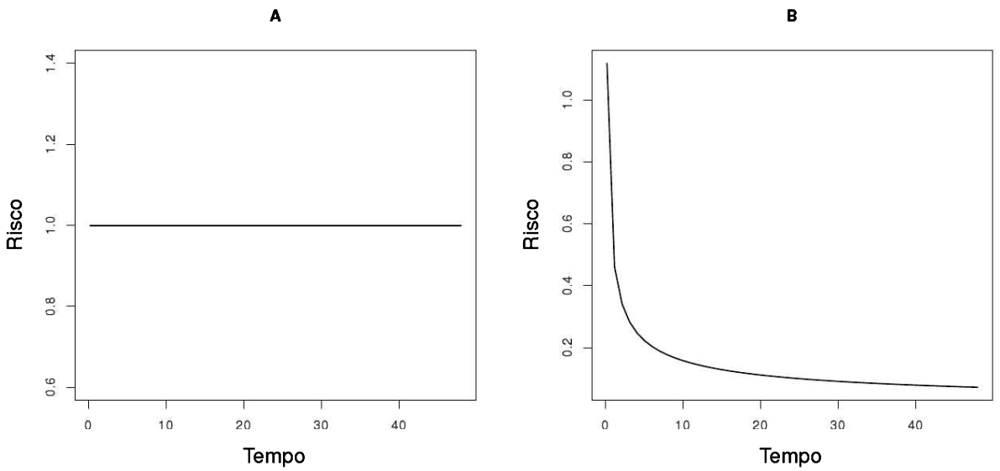
EXEMPLOS DA FUNÇÃO \(\lambda(t)\)
- Figura A: risco constante ao longo do tempo.
- Exemplo: risco de fratura em uma população de estudantes ao longo de 12 meses.
- Se as atividades de risco são semelhantes durante todo o período, a taxa pode ser considerada aproximadamente constante.
EXEMPLOS DA FUNÇÃO \(\lambda(t)\)
- Quando o risco é constante:
- o processo é dito sem memória;
- a chance de ocorrência do evento é independente do tempo decorrido.
- Figura B: risco decrescente.
- Exemplo: óbito pós-cirúrgico, com risco alto inicialmente e queda rápida ao longo do tempo.
EXEMPLOS DA FUNÇÃO \(\lambda(t)\)
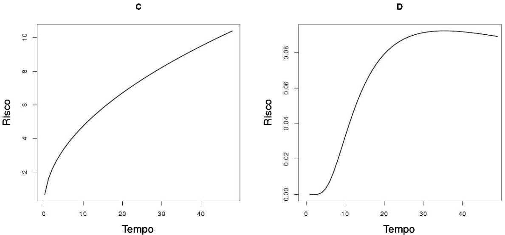
EXEMPLOS DA FUNÇÃO \(\lambda(t)\)
- Figura C: risco crescente.
- Exemplo: tempo até solidificação de uma fratura óssea.
- O risco de cura é baixo no início e aumenta com o tempo.
- Neste caso, o evento de interesse é a cura.
EXEMPLOS DA FUNÇÃO \(\lambda(t)\)
- Figura D:
- risco nulo no início,
- crescimento intermediário,
- estabilização posterior.
- Exemplo: surgimento de metástases durante e após quimioterapia.
EXEMPLOS DA FUNÇÃO \(\lambda(t)\)
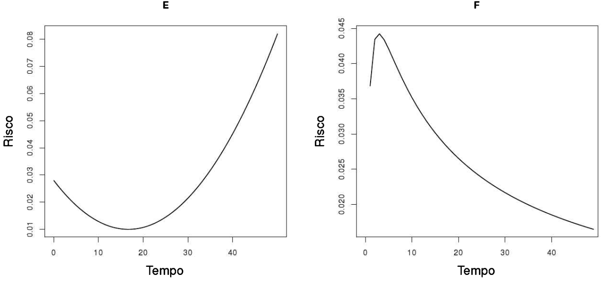
EXEMPLOS DA FUNÇÃO \(\lambda(t)\)
- Figura E: risco alto inicialmente, queda e novo crescimento.
- Exemplo: mortalidade por AIDS após terapias antirretrovirais.
- Figura F: risco sobe rapidamente e depois cai.
- Exemplo: tuberculose após início do tratamento.
EXEMPLOS DA FUNÇÃO \(\lambda(t)\)
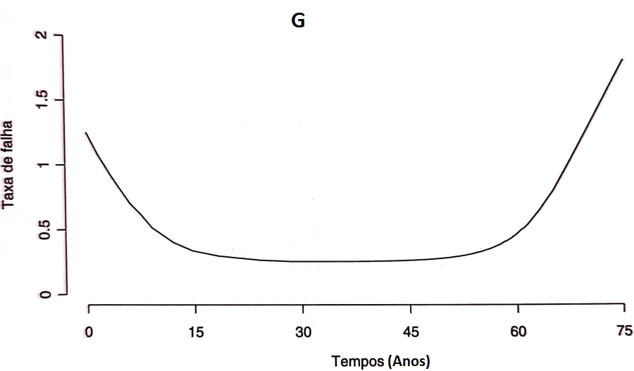
COMPORTAMENTO DA FUNÇÃO \(\lambda(t)\)
- Figura G: combinação de risco decrescente, constante e crescente.
- Conhecida como curva da banheira.
- Representa o risco ao longo da vida humana:
- alto no início (mortalidade infantil),
- aproximadamente constante na fase intermediária,
- crescente na velhice.
FÓRMULA ALTERNATIVA DA FUNÇÃO \(\lambda(t)\)
- Embora a definição da função \(\lambda(t)\) pareça complexa, é possível demonstrar que:
\[ \lambda(t)=\frac{f(t)}{S(t)} \]
EXEMPLO: DADOS DE DISPOSITIVOS
- Nesse exemplo, consideramos que, por estudos anteriores, que o tempo de falha \(T\) (em mil horas) dos dispositivos tem:
- a função densidade de probabilidade \(f(t) = 2 e^{-2 t}, \quad t>0\)
- a função de confiabilidade: \(S(t)=e^{-2 t}\)
- o percentil \(t_p = -\frac{\ln(1 - p)}{2}\).
- Encontre agora a função de risco \(\lambda(t)\).
EXEMPLO: DADOS DE DISPOSITIVOS (SOLUÇÃO)
- A função de risco é dada por:
\[ \lambda(t)=\frac{f(t)}{S(t)}=\frac{2 e^{-2 t}}{e^{-2 t}}=2 \]
- Assim, a função de risco neste caso é constante.
EXEMPLO: DADOS DE DISPOSITIVOS (GRÁFICO)
- O gráfico da função de risco \(\lambda(t)=2\) é dado por:
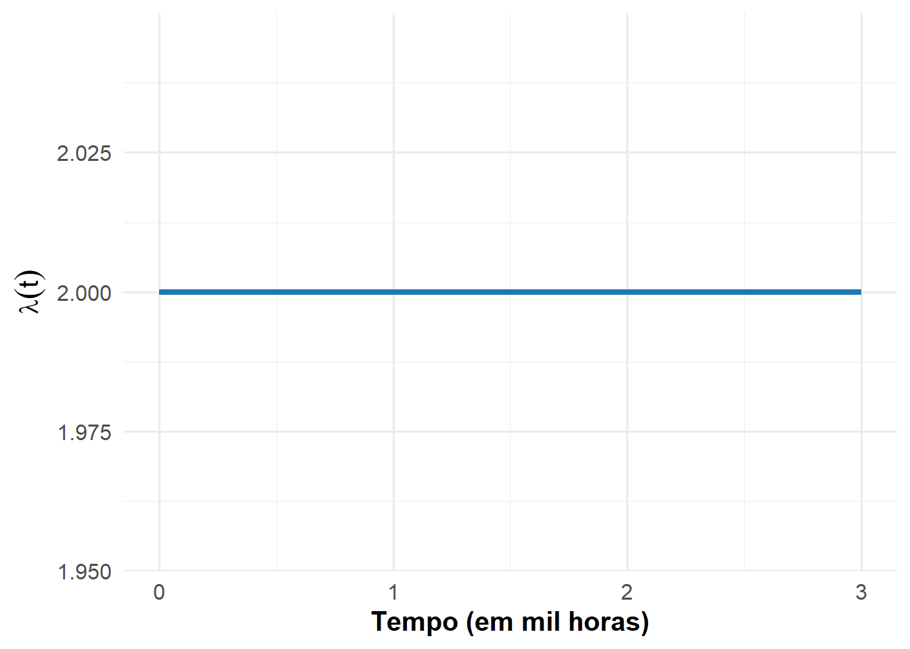
- Assim, o risco instantâneo de falha no tempo \(t\) dado que o dispositivo não falhou até esse instante é constante para todo \(t\).
COMPARANDO AS FUNÇÕES \(f(t)\) e \(\lambda(t)\)

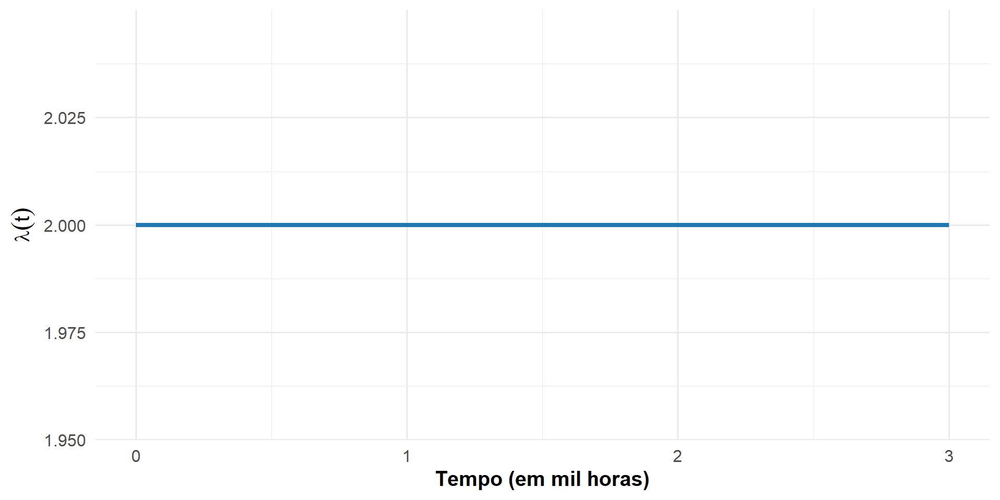
COMPARANDO AS FUNÇÕES \(f(t)\) e \(\lambda(t)\)
- É muito comum a confusão na interpretação das funções \(\lambda(t)\) e \(f(t)\).
- Densidade \(f(t)\):
- Mostra quando os eventos tendem a ocorrer.
- No caso do exemplo anterior, é mais alta no início e decai com o tempo.
- Interpretação: os eventos são mais prováveis logo no começo.
- \(f(2)\) retrata a densidade de falhas que ocorrem em 2000 horas, sem considerar se o elemento apresentou o evento de interesse até lá.
COMPARANDO AS FUNÇÕES \(f(t)\) e \(\lambda(t)\)
- Função de risco \(\lambda(t)\):
- Mede o risco instantâneo de ocorrência do evento de interesse, dado que o indivíduo ainda não teve o evento.
- No caso do exemplo anterior a função de risco é constante.
- Interpretação: o risco instantâneo de falhar em cada instante é sempre o mesmo, independentemente do quanto tempo a unidade não falhou.
- Por exemplo, \(\lambda(2)\) retrata a risco instantâneo de falhas em 2000 horas, dado que o dispositivo ainda não falhou até este momento.
- Em resumo:
- \(f(t)\): “onde os eventos tendem a ocorrer”.
- \(\lambda(t)\): “qual é o risco agora, dado que ainda não ocorreu”.
FUNÇÃO DE RISCO ACUMULADO
INTRODUÇÃO
- A função de risco acumulado \(\Lambda(t)\) ajuda a responder questões do tipo:
- Qual é o risco total acumulado de um paciente com AIDS vir a óbito até 365 dias?
- Qual é o risco total acumulado de um emissor de laser apresentar falha até 2000 horas?
DEFINIÇÃO DA FUNÇÃO \(\Lambda(t)\)
- A função de risco acumulado \(\Lambda(t)\) mede o risco de ocorrência do evento até um determinado tempo \(t\).
- Matematicamente, isso significa a soma de todos os riscos em todos os tempos até o tempo \(t\).
- Como \(T\) é uma variável aleatória contínua, esta é uma soma infinitesimal e pode ser calculada a partir de uma integral da função de risco: \[ \Lambda(t) = \int_0^t \lambda(u) \, du \]
INTERPRETAÇÃO DA FUNÇÃO \(\Lambda(t)\)
A função de risco acumulado \(\Lambda(t)\) mede o risco total que um indivíduo enfrentou até um determinado tempo \(t\).
Diferente da função de risco \(\lambda(t)\), que olha o risco instantâneo em cada ponto do tempo, \(\Lambda(t)\) acumula esses riscos ao longo do tempo.
Exemplos práticos:
- Para um paciente com AIDS: \(\Lambda(365)\) indica o risco total de óbito acumulado até 1 ano após o diagnóstico.
- Para um emissor de laser: \(\Lambda(2)\) mostra o risco total de falha acumulado até 2000 horas de operação.
Intuição:
- Quanto maior \(\Lambda(t)\), maior a chance de que o evento de interesse já tenha ocorrido até o tempo \(t\).
EXEMPLO: DADOS DE DISPOSITIVOS
- Nesse exemplo, consideramos que, por estudos anteriores, que o tempo de falha \(T\) (em mil horas) dos dispositivos tem:
- a função densidade de probabilidade \(f(t) = 2 e^{-2 t}, \quad t>0\)
- a função de confiabilidade: \(S(t)=e^{-2 t}\)
- o percentil \(t_p = -\frac{\ln(1 - p)}{2}\).
- a função de risco \(\lambda(t)=2\)
- Encontre agora a função de risco acumulado \(\Lambda(t)\).
EXEMPLO: DADOS DE DISPOSITIVOS (SOLUÇÃO)
A função de risco acumulada é: \[ \Lambda(t) = \int_0^t \lambda(u) \, du = \int_0^t 2 \, du = 2 t \]
Isto é, \(\Lambda(t)\) é uma função linear.
EXEMPLO: DADOS DE DISPOSITIVOS (GRÁFICO)
- O gráfico da função de risco acumulado \(\Lambda(t)=2t\) é dada por:
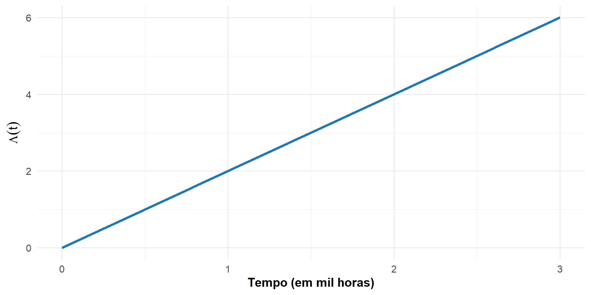
- Observe como a função é linear.
- A função de risco acumulado representa o total de risco enfrentado até o tempo (t).
- Se o risco instantâneo é o mesmo em todos os instantes, então:
- Cada unidade adicional de tempo adiciona a mesma quantidade de risco.
- Assim, o risco total cresce de forma proporcional ao tempo, resultando em uma função linear.
TEMPO MÉDIO E TEMPO MÉDIO RESIDUAL
INTRODUÇÃO
Outras duas quantidades de interesse em Análise de Sobrevivência e Confiabilidade são:
- o tempo médio de ocorrência do evento de interesse;
- o tempo médio residual de ocorrência do evento de interesse.
TEMPO MÉDIO \(t_m\)
O tempo médio de ocorrência do evento de interesse, denotado por \(t_m\), é definido como o valor esperado de \(T\).
Matematicamente: \[ t_m = E(T) = \int_0^\infty t f(t)\,dt \]
Uma forma equivalente, muito utilizada em Análise de Sobrevivência, é: \[ t_m = \int_0^\infty S(t)\,dt \]
Ou seja, o tempo médio corresponde à área sob a curva de sobrevivência.
- Essa fórmula só é possível porque \(T\) é uma variável aleatória positiva (Teorema de Fubini)
TEMPO MÉDIO RESIDUAL \(\text{vmr}(t)\)
O tempo médio residual é definido condicionalmente a um certo tempo \(t\).
Para indivíduos que não apresentaram o evento até o tempo \(t\), a pergunta é:
- Quanto tempo, em média, ainda falta para o evento ocorrer?
O tempo médio residual é dado por: \[ \text{vmr}(t)=\frac{\int_t^\infty (u-t)f(u)\,du}{S(t)} \]
Uma forma equivalente é: \[ \text{vmr}(t)=\frac{\int_t^\infty S(u)\,du}{S(t)} \]
Observe que \(\text{vmr}(0)=t_m\)
EXEMPLO: DADOS DE DISPOSITIVOS
- Nesse exemplo, consideramos que, por estudos anteriores, que o tempo de falha \(T\) (em mil horas) dos dispositivos tem:
- a função densidade de probabilidade \(f(t) = 2 e^{-2 t}, \quad t>0\)
- a função de confiabilidade: \(S(t)=e^{-2 t}\)
- o percentil \(t_p = -\frac{\ln(1 - p)}{2}\).
- a função de risco \(\lambda(t)=2\)
- a função de risco acumulado \(\Lambda(t)\)
- Encontre agora o tempo médio \(t_m\) e o tempo médio residual \(vmr(t)\).
EXEMPLO: DADOS DE DISPOSITIVOS (SOLUÇÃO)
- O tempo médio de ocorrência do evento de interesse é:
\[ t_m = E(T) = \int_0^\infty S(t)\,dt = \int_0^\infty e^{-2 t}\,dt = \frac{1}{2} = 500 \textrm{ horas } \]
- O tempo médio residual é:
\[ \text{vmr}(t) = \frac{\int_t^\infty S(u)\,du}{S(t)} = \frac{\int_t^\infty e^{-2 u}\,du}{e^{-2 t}} = \frac{1}{2} = 500 \textrm{ horas } \]
- Ou seja, para a distribuição exponencial:
- o tempo médio residual não depende de \(t\).
RELAÇÕES ENTRE AS FUNÇÕES BÁSICAS
RELAÇÃO ENTRE AS FUNÇÕES
As funções básicas da análise de sobrevivência estão relacionadas entre si.
Antes de explorar essas relações matemáticas, vamos relembrar rapidamente o papel de cada função a partir de algumas perguntas fundamentais.
Perguntas importantes:
Em qual instante de tempo os eventos tendem a ocorrer mais? → Função Densidade de Probabilidade \(f(t)\).
Qual a probabilidade de sobreviver por mais de \(t\) unidades de tempo?
→ Função de sobrevivência \(S(t)\).Qual o risco de ocorrência do evento no tempo \(t\), sabendo que o indivíduo sobreviveu até esse momento?
→ Função de risco \(\lambda(t)\).Qual o risco total acumulado de ocorrência do evento até um tempo \(t\)?
→ Função de risco acumulado \(\Lambda(t)\).Qual o tempo médio esperado até a ocorrência do evento?
→ Tempo médio de vida \(t_m\).Qual o tempo médio restante até a ocorrência do evento, dado que o indivíduo já sobreviveu até \(t\)?
→ Vida média residual \(vmr(t)\).
RELAÇÃO MATEMÁTICA ENTRE AS FUNÇÕES
As funções da análise de sobrevivência possuem relações matemáticas diretas entre si.
Principais relações:
- Relação entre sobrevivência e distribuição acumulada:
\[ S(t) = 1 - F(t) \]
- Relação entre função de risco e densidade:
\[ \lambda(t) = \frac{f(t)}{S(t)} = -\frac{d}{dt}\left( \ln S(t) \right) \]
- Relação entre risco acumulado e risco instantâneo:
\[ \Lambda(t) = \int_0^t \lambda(u)\,du = -\ln S(t) \]
RELAÇÃO MATEMÁTICA ENTRE AS FUNÇÕES
- Relação entre sobrevivência e risco acumulado:
\[ S(t) = e^{-\Lambda(t)} = e^{-\int_0^t \lambda(u)\,du} \]
- Relação envolvendo a vida média residual:
\[ S(t) = \frac{vmr(0)}{vmr(t)} \exp\left\{-\int_0^t \frac{du}{vmr(u)}\right\} \]
- Relação entre risco e vida média residual:
\[ \lambda(t) = \frac{\frac{d}{dt}vmr(t)+1}{vmr(t)} \]
- Essas relações mostram que o conhecimento da função de sobrevivência \(S(t)\) implica no conhecimento das demais funções, como: \(F(t)\), \(f(t)\), \(\lambda(t)\), \(\Lambda(t)\) e \(vmr(t)\).
EXERCÍCIO
Considere que o tempo do diagnóstico até a morte \(T\) de pacientes acometidos por uma certa enfermidade possui função de sobrevivência dada por
\[ S(t) = e^{-t^\gamma}, \quad \gamma > 0 \]
Determine:
a função densidade de probabilidade \(f(t)\);
a função de risco \(\lambda(t)\).